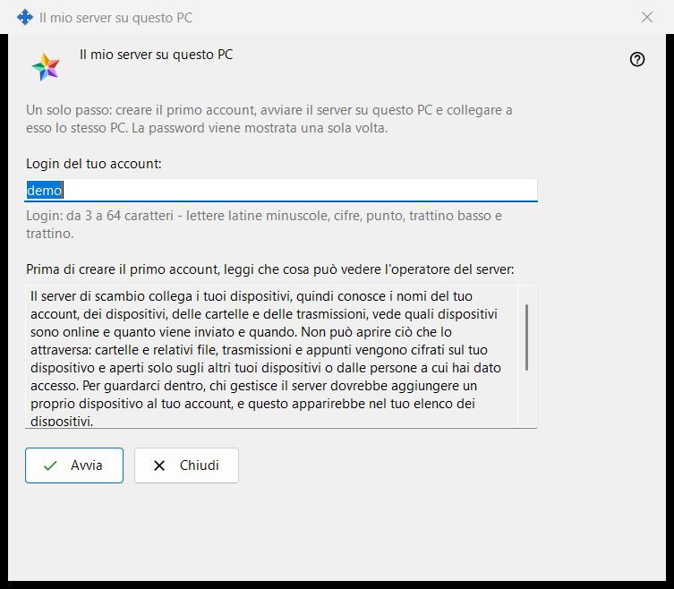
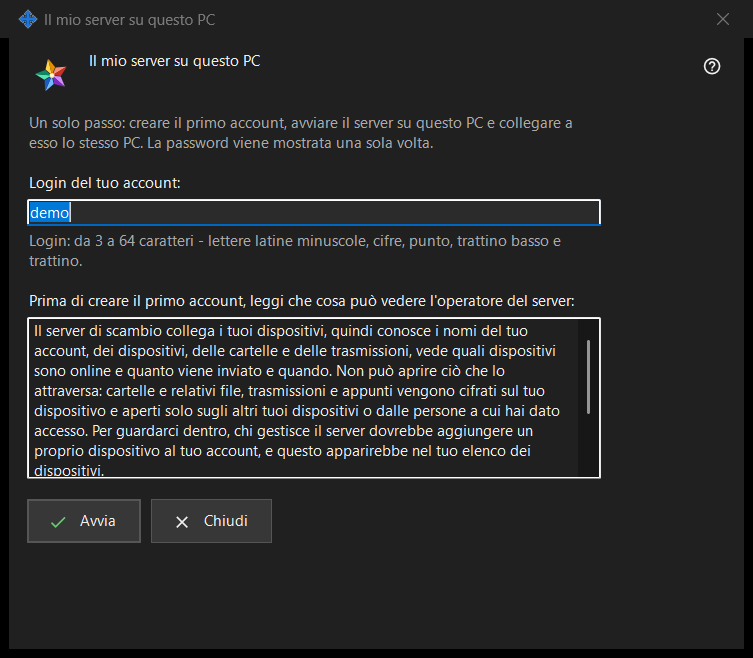

Il mio server su questo PC
Scopo
Configura in un solo passaggio un Media Exchange Server personale su questo PC: crea il primo account, avvia il server e collega a esso lo stesso PC. Si apre dal pulsante «Usa questo PC come mio server..» nella pagina Media Exchange Server delle impostazioni di Share Manager, che compare solo finché su questo PC non è configurato alcun server.


In questo ordine
- Controlla il login proposto, ricavato dal tuo nome utente di Windows, oppure scrivine uno tuo.
- Leggi la dichiarazione su che cosa può vedere l'operatore.
- Premi «Avvia» e attendi i quattro passaggi.
- Copia subito la password, poi l'impronta o la stringa di connessione per gli altri tuoi dispositivi.
- Premi «Chiudi».
Gli elementi
Login
«Login del tuo account:» accetta da 3 a 64 caratteri: lettere latine minuscole, cifre, punto, trattino basso e trattino; le maiuscole vengono convertite in minuscole. Il suggerimento sotto il campo diventa del colore di avviso finché il testo non può essere un login, e «Avvia» non fa nulla finché non lo diventa.
Che cosa può vedere l'operatore
Il riquadro di sola lettura sotto «Prima di creare il primo account, leggi che cosa può vedere l'operatore del server:» elenca che cosa un operatore del server può vedere di account, dispositivi, cartelle, trasmissioni e appunti, che cosa il server non può leggere e per quanti giorni vengono conservati i registri. Sul tuo server l'operatore sei tu.
Passaggi ed errori
«Avvia» esegue quattro passaggi e indica quello in corso: «Creo l'account..», «Avvio il server..», «Controllo il certificato..» e «Collego questo PC..». Nel frattempo il login è bloccato e la finestra non si può chiudere. Se non è stato creato nessun account, una frase ne spiega il motivo, per esempio «Quell'account esiste già - scegli un altro login.»; correggi il login e premi di nuovo «Avvia».
Risultato e indirizzi
Se tutto va a buon fine, la finestra mostra «Fatto: il server è in esecuzione, l'account è stato creato e questo PC è collegato.» ed elenca «Indirizzo per questo PC:», «Indirizzo per gli altri dispositivi:» (che riporta «non impostato - inseriscilo nelle impostazioni del server di scambio» finché quell'indirizzo non è impostato), «Utente:», «Password (mostrata una sola volta):» e «Impronta del certificato:». Quando l'indirizzo per gli altri dispositivi è impostato, si aggiunge «Stringa di connessione:». Se il server non si è avviato, l'account esiste comunque e la sua password è mostrata una sola volta più in basso.
Password e copia
La password è mascherata. «Mostra la password» la rivela; «Copia password» la mette negli appunti attraverso il percorso protetto che la tiene fuori dalla cronologia degli appunti di Windows e dagli appunti nel cloud. La finestra la mostra solo questa volta, a meno che «Conserva le password degli account su questo PC» sia attivo. «Copia impronta» e «Copia la stringa» sono copie normali: nessuna delle due contiene una password. Gli altri dispositivi hanno bisogno di indirizzo, login, password e impronta, che confrontano al primo collegamento.
Chiusura
Se la password non è stata né copiata, né mostrata, né conservata su questo PC, «Chiudi» chiede «Chiudere senza copiare la password?» con No come risposta predefinita, perché la password non può essere mostrata di nuovo, ma solo reimpostata.
Impostazioni del gestore · Impostazioni condivisione SFTP · Impostazioni server di scambio